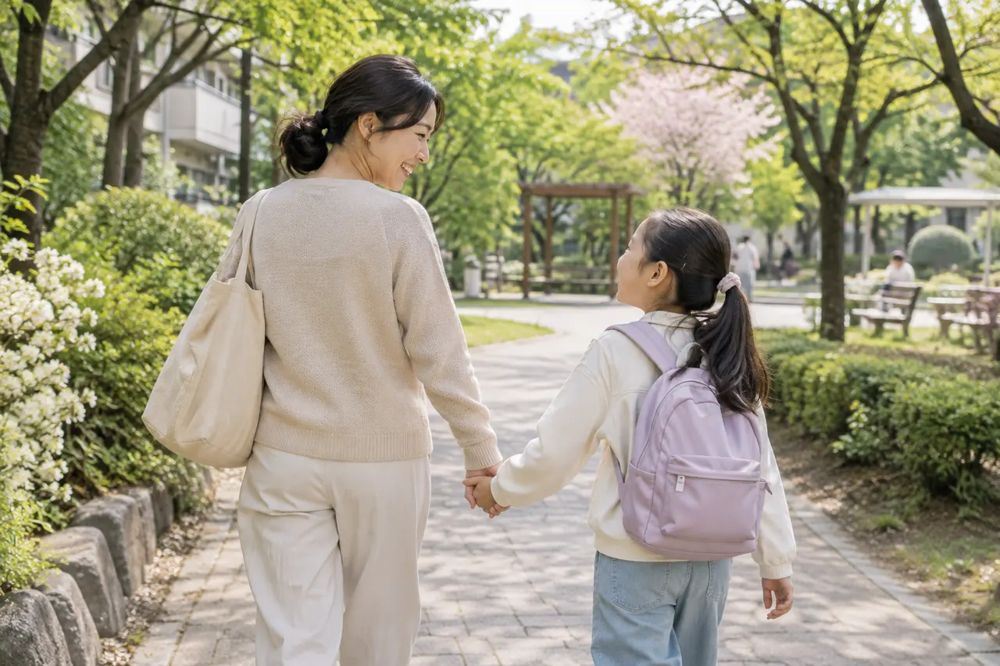
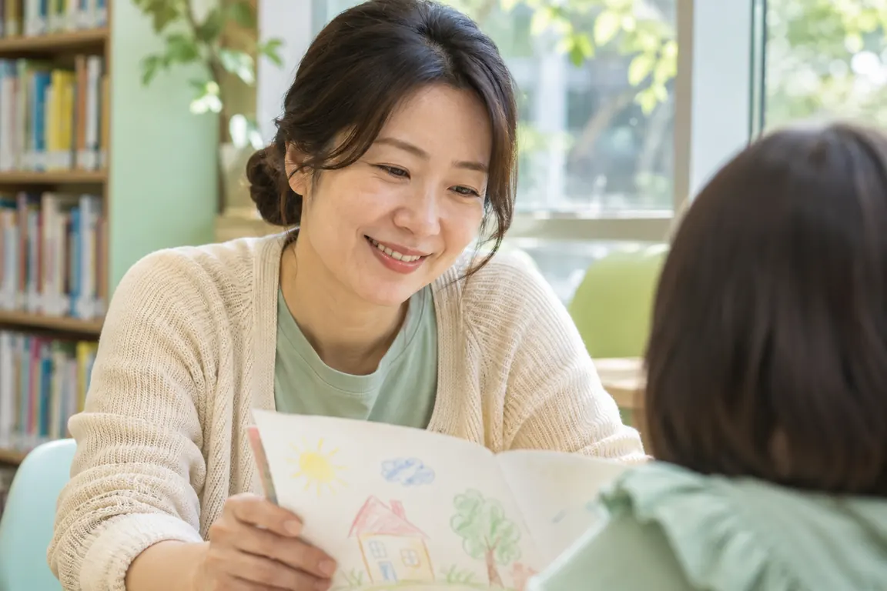

아이와 보호자를 위한 복지 정보
모든 고민을 대신할 수는 없지만, 필요한 정보를 찾는 일은 함께 하겠습니다

우리의 이야기
지원 제도부터 가까운 기관까지, 매번 처음부터 알아봐야 하는 일을 줄이고 싶었습니다
흩어진 복지 제도와 신청 조건을 한곳에서 살펴볼 수 있습니다
아이에게 맞는 기관을 가까운 지역부터 찾아볼 수 있습니다
비슷한 고민을 해 본 보호자의 경험을 읽고 이야기를 나눌 수 있습니다
서비스 소개
복지 정보를 찾고, 궁금한 점을 묻고, 비슷한 경험을 나눌 수 있습니다
파운더 스토리
대학생이던 저는 어느 날 아이의 말이 더디게 트여 걱정하던 부모의 이야기를 읽었습니다먼저 겪어 본 누군가의 이야기를 들을 수 있었다면, 혼자 답을 찾아 헤매는 시간이 조금은 덜 막막했겠다고 생각했습니다
그 질문을 품고 UMC 10기에서 동료들을 만났습니다여덟 명의 대학생이 기획과 디자인, 개발을 함께하며 첫 번째 보듬보듬을 만들었습니다
흩어진 복지 정보를 모으고 출처를 찾아볼 수 있게 했습니다비슷한 고민을 겪은 보호자의 경험도 한곳에서 읽을 수 있도록 했습니다
아이에게 맞는 도움을 찾는 누군가에게 그 첫걸음이 조금 더 가벼워지기를 바랍니다
정보에 쏟는 시간을 덜고, 아이와 보내는 시간에 더 마음을 쓸 수 있기를 바랍니다
